5.7.5 Zigbee Application Demo: Multi-Sensor with Deep Sleep Functionalition
WBZ451Curiosity Board
Devices (Device): | PIC32CX1012BZ25048(MCU) on WBZ451module |
Peripherals (Used, On-Board): | UART-USB Converter|
Introduction
This tutorial will help users to create a low power enabled multi sensor end device application which can get connected with a Combined Interface(CI) and report the sensor values.
Prerequisites :
Hardware Required
| Tool | Qty |
|---|---|
| WBZ451Curiosity Boards | 2 |
| Micro USB cable | 2 |
| Personal Computer | 1 |
SDK Setup
- Getting Started with Software Development
Terminal Software
- TeraTerm
Programming the precompiled hex file or Application Example
The Multi-Sensor is an end device application. The Multi-Sensor application works by getting connected with a co-ordinator device(Combined Interface). So, to successfully execute this demo, it is mandatory to have a combined interface application set up prior to running the multi-sensor application.
| Attention | |
|---|---|
#define CS_BDB_PRIMARY_CHANNELS_MASK (1L << 12)
#define CS_BDB_SECONDARY_CHANNELS_MASK (1L << 12)-
First program the WBZ451Curiosity board with Combined Interface which can act as Zigbee Gateway/Coordinator. Precompiled Hex file is located in "<Harmony Content Path>\wireless_apps_pic32cxbz3_wbz35\apps\zigbee\multisensor_deepSleep" folder
-
Program another WBZ451Curiosity board with Multi-Sensor application. Follow the steps mentioned below to program the curiosity board with Multi-Sensor application.
Programming the hex file using MPLABX IPE
-
Precompiled Hex file is located in "<Harmony Content Path>\wireless_apps_pic32cxbz3_wbz35\apps\zigbee\multisensor_deepSleep" folder
-
To flash the hex file using IPE, follow the steps mentioned here
Caution: Users should choose the correct Device and Tool information
Programming the Application using MPLABX IDE
Follow the steps below to run a precompiled application example.
Prerequisites
-
Install MPLAB X IDE
-
Install XC32 Compiler
-
Install Device Family Part Pack
-
Install MCC Plugin
-
Install Harmony 3 Dependency
Open, Build and Program an existing application example
-
Connect Curiosity Board to the PC using usb cable
-
Open MPLAB X IDE
-
Select File > Open Project
-
Browse to project location: "<Harmony content path>\wireless_apps_pic32cxbz3_wbz35\apps\zigbee\multisensor_deepSleep\firmware"
Attention Information related to the workings of the application example are available in readme.md file available in the multisensor folder
-
Open Project Properties
-
Select WBZ451 Curiosity Board as hardware tool for programming
-
Ensure correct DFP is selected as mentioned in the Tools and Harmony Components
-
-
Select XC32 compiler
-
Select option Build Project in IDE to compile the application example
-
Select option Run Project in IDE to program the target – the onboard debugger will program the example application
<Harmony Content Path> how to find what is my Harmony Content Path
Demo Description
This application demonstrate the working of Zigbee Multi-Sensor end device joining to Zigbee Coordinator (Combined Interface) . After joining, multisensor device will start ZCL attribute reporting of sensor data such as temperature, occupancy, light, and humidity.
| Application | Zigbee Logical Device Type | Functionality |
|---|---|---|
| Combined Interface | Coordinator | Device capable of controlling and monitoring other devices. It is typically a mains-powered device like a personal computer |
| Multi-Sensor | End Device | Reports sensor data such as temperature, occupancy, light, and humidity periodically to gateway |
The application demonstration required to have a combined interface application up and running in the vicinity. which can act as Zigbee Gateway/Coordinator. The Multi sensor application here can act as Zigbee end device.
Demo Steps: Commissioning.
The Zigbee Multi-Sensor can be connected to a zigbee network.
Joining Multi-Sensor with WBZ451Combined Interface (CI) Coordinator
# Hardware & Software Setup
-
Supply power to WBZ451 Curiosity Board consisting of Combined Interface application by connecting a USB cable.
- The application activity is shown as "Console Log" through on-board UART-USB
converter
- Open Terminal(eg: Tera Term) with the setup as shown below to see the log
- On the PC side virtual COM port
connection that corresponds to the board shall have following settings:
- BAUD RATE: 115200 (as configured in SERCOM configuration)
- PARITY: None
- DATA BITS: 8
- STOP BITS: 1
- FLOW CONTROL: None
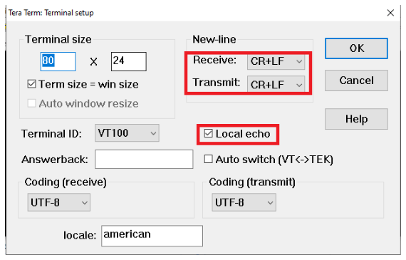
-
Make the serial terminal ready and then press the reset button on the curiosity board. Below log will be displayed.
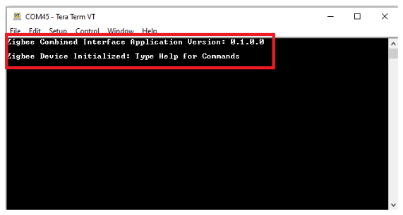
# Network Formation (Coordinator - (Combined Interface))
-
Once the board is powered on and serial terminal setup is done, the board is ready to be operated as a coordinator. It is responsible for initially forming the network and then, via the Trust Centre functionality, managing which other devices are allowed to join the network and distributing security keys to those that are allowed to join.
-
Input command : resetToFN and look for the below logs for successful zigbee network formation on CI. It will open up the network for other zigbee devices to join for first 180 seconds from the first powerON.
-
Case1: If a near by device is trying to join a network, and sees CI then will join the network as shown in below log.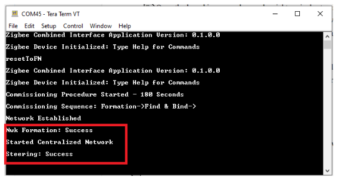
-
Case 2: The commisioning procedure will last for 180 secods. In case no other devices are there in vicinity and at the endo of 180 seconds, the below log will be displayed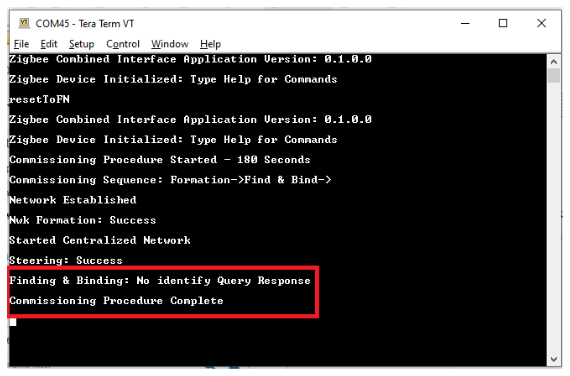
-
Case 3: To open up the network after 180 seconds to allow other devices to join, we have to input the below commands in CI, before commissioning is initiated in another device.
setPermitJoin 180→ This command opens up the network for next 180sec
invokeCommissioning 8 0 → This command opens up the network for "finding and binding procedure"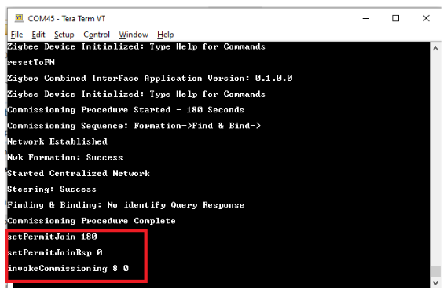
# Commissioning (End Device - Multi-Sensor)
- Supply power to WBZ451 Curiosity Board which is programmed with Multi-Sensor image by connecting a USB cable. The Multi-Sensor will search for Zigbee coordinator device and will join to network and intiate Finding & Binding.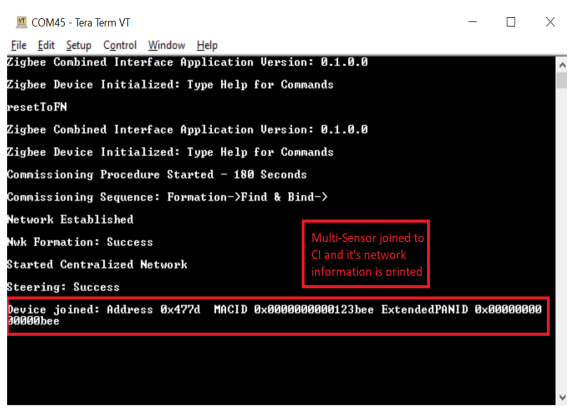
-
Once Multi-Sensor finishes Finding & Binding procedure, it will start attribute reporting. The Combined interface terminal log will print the received attribute information as shown below.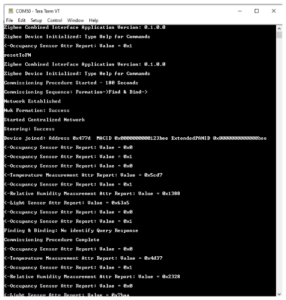
Developing this Application from scratch using MPLAB Code Configurator
This section intented to showcase the complete application development from the scratch including the individual component and its dependency inclusion.
Tip New users of MPLAB Code Configurator are recommended to go through the overview-
Create a new MCC Harmony Project -- Refer to new MCC project Creation.
-
Add "Multi Sensor" device type to the project and accept all the dependencies
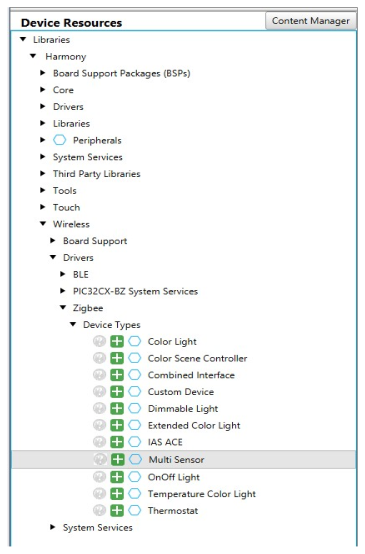Accept all the component auto-activation and attachment auto-connect confirmation.
Confirm "Yes" for the Attachment Auto-Connect requests
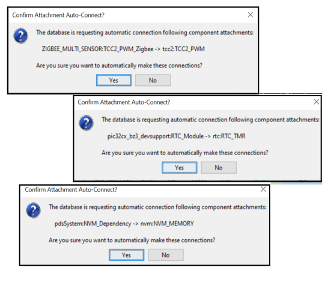 -
After the inclusion of the dependent components, the final project graph looks like
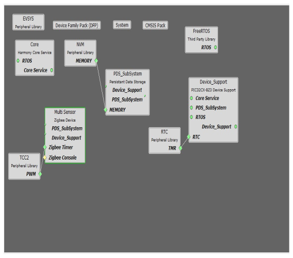 - Configure "Multi Sensor" component
- Enable Deep Sleep feature.
- Fix Primary Channel and Secondary Channel to channel
12
This is because the zigbee console command is removed from this example to showcase minimum power consumption. Consequencially, the Combined Interface(CI) device also need to be fixed at the same channel of 12(see ATTENTION above).
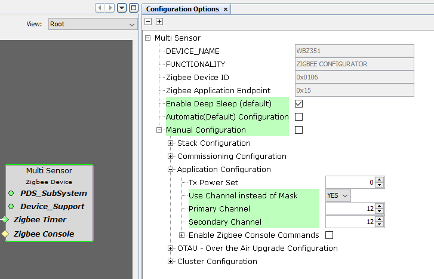 -
System Clock Configuration and SOSC selection selection during sleep mode
- System Clock Selection

- SOSC clock configuration
 Note: Even after enabling and selecting the SOSC as backup source in the clock configuration. The LPCLK and RTC clock still show as 0Hz. This is a known issue which will be resolved in upcoming MCC release. For the time being, to fix this issue, a manual application code modification is necessary. The required change will be discussed in the next section.
Note: Even after enabling and selecting the SOSC as backup source in the clock configuration. The LPCLK and RTC clock still show as 0Hz. This is a known issue which will be resolved in upcoming MCC release. For the time being, to fix this issue, a manual application code modification is necessary. The required change will be discussed in the next section. -
Generate Code
Now all the required components has been added to the project and necessary configuration modification is made. The next step is to generate the application code.
Manual Application code edit
This section talks about the mandatory code modifications that needs to be incorporated inorder to implement the sleep mode functionality.
Step 1: app_user_edits.c
-
Some of the Harmony 3 generated files cannot be fully configured by the MPLABX Code Configurator. This file contains the instructions for the user to modify these files.
Follow the instruction mentioned on the app_user_edits.c file and after completing the required edits, comment out or remove the #error line
Step 2: plib_gpio.c
-
Code Changes for Sleep functionality
Add the below code inside the GPIO_Intitialize function
These changes are made to set the default states of respective GPIO pins in consideration to save the power.
void GPIO_Initialize ( void ) { /* Disable JTAG since at least one of its pins is configured for Non-JTAG function */ CFG_REGS->CFG_CFGCON0CLR = CFG_CFGCON0_JTAGEN_Msk; //All pubs are defined as input after a reset. GPIOA_REGS->GPIO_TRISSET = 0xFFFF; //Set all pins as input GPIOA_REGS->GPIO_CNPUSET = 0x7FF3; //Except PA2 (QSPI Data), PA3, the others are pulled up GPIOA_REGS->GPIO_CNPDSET = 0x0008; //RPA3 is Pulled down: SERCOM 0-RTS /* PB */ GPIOB_REGS->GPIO_ANSELSET = 0x0040; //PB6 ANSEL for Temp sensor GPIOB_REGS->GPIO_TRISSET = 0xFFFF; //Set all pins as input GPIOB_REGS->GPIO_CNPUSET = 0x3D96; //Pull up: PRB 1, 2, 4, 7, 8, 10, 11, 12 , 13 GPIOB_REGS->GPIO_CNPDSET = 0x0029; //Pull down RB0,3,5 for LED /* PORTA Initialization */ /* PORTB Initialization */ /* PPS Input Remapping */ /* PPS Output Remapping */ } -
Step 3: Plib_rtc.h
- Default Generated: #define RTC_COUNTER_CLOCK_FREQUENCY (0U / (1UL << (0x1U - 1U)))
- Replace to: #define
RTC_COUNTER_CLOCK_FREQUENCY (32768U / (1UL << (0x1U - 1U)))
Note:This particular change is made to componsate the known issue earlier discussed in clock configuration. This issue wil be resolved in the upcoming release and the MCC auto generated code will have the required change by default.
-
Step 4: zigbeeAppDeviceSelect.h
- Default Generated: #define CS_UID 0xbee //Unique Identifier (UID) determining the device extended address
- Change to a unique value: #define CS_UID 0x123bee //Unique Identifier (UID) determining the device extended address
Reason:By default the Co-Ordinator is also having same value. In a network the UID value should be unique
Note: The below modifications are specific to the Deep Sleep Mode feature. - Step 5:
initialization.c
In the function ‘SYS_Initialize’, cut the lines from ‘#322’ to ‘#327’ and place it inside the function ‘_on_reset’ after line no ‘#268’.Refer below image.
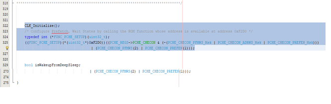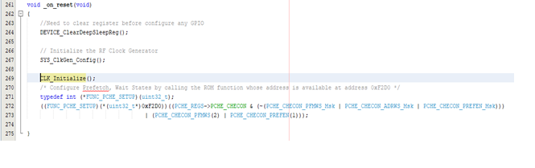
- Step 6:
heap_4.c
Update the line #64, the declaration of ucHeap with the attribute code as : ‘__attribute__((section (".bss.ucHeap"), noload))’. Refer the below screenshot
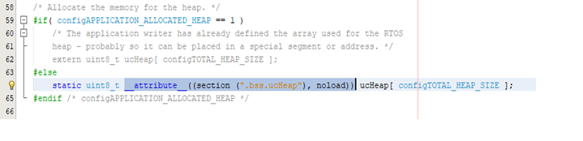
- Step 7:
stackConfig.h(optional)
If the deep sleep period has to be increased/decreased according to the requirements, then it has to be changed in the ‘stackConfig.h’ file as mentioned below.
Make sure that the ‘CS_DEFAULT_END_DEVICE_TIMEOUT’ value should be three times greater than the ‘CS_END_DEVICE_SLEEP_PERIOD’. For e.g., if the Device deep sleep period is 1 min, then the End device timeout period should be greater than 3 min.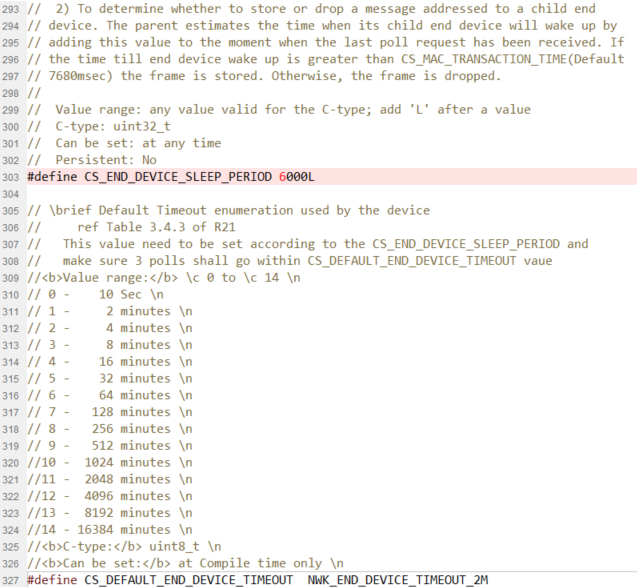